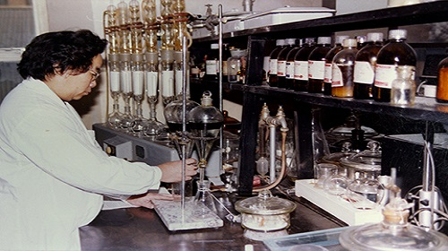

屠呦呦 —— 春草鹿呦呦
2020年12月27日 下午6点36分


2015年12月10日，屠呦呦因开创性地从中草药中分离出青蒿素应用于疟疾治疗而获得当年的诺贝尔医学奖。这是在中国本土进行的科学研究首次获得诺贝尔奖。1968年，中药研究所开始抗疟中药研究，39岁的屠呦呦担任该项目的组长。经过两年的研究对象筛选，并受到中国古代药典《肘后备急方》的启发，项目组将重点放在了对青蒿的研究上。1971年，在失败了190次之后，项目组终于通过低温提取、乙醚冷浸等方法，成功提取出青蒿素，并在接下来的反复试验中得出了青蒿素对疟疾抑制率达到100%的结果。在没有先进实验设备、科研条件艰苦的情况下，屠呦呦带领着团队攻坚克难，面对失败不退缩，终于胜利完成科研任务。青蒿素问世44年来，共使超过600万人逃离疟疾的魔掌。未来，屠呦呦希望通过研究，让青蒿素应用于更多地方，为更多人带来福音。